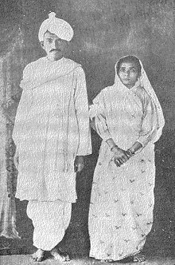

Monhandas Karamchand Gandhi was born in the small town of Porbandar, on the west coast of India, on October 2 1869. He belonged by birth to the Vaishya, or trading caste. His father died when he was 15 years old, and apart from that time, his mother became the greatest influence in his life. Her spiritual teacher was a Jain devotee. Among the Jains in India the central doctrine is the "sanctity of all life," or Ahimsa, which is often translated as "non-violence." This teaching remained paramount with Gandhi.
In South Africa
In 1896 he went to the Transvaal to help a client in a legal suit. That visit changed the whole course of his life. Seeing the social and political disabilities of his fellow-countrymen in South Africa, he decided to stay and help them and soon he had become their political leader and adviser. Meanwhile a religious conflict was taking place in within him. He read Tolstoy and corresponded with him: the result was an experiment in the simple communal life conducted by a small band of enthusiasts whom he had gathered together. He became an ascetic of the most rigorous type, setting great store by fasting and every form of self-denial. To the end of his life he remained a devout Hindu, but declared if ever "untouchability" were made part of Hinduism he would cease to be a Hindu. Perhaps the greatest religious effort of his life was to break down "untouchability."
He went on steadily preparing his followers in South Africa for the struggle which was to end the indignities under which they suffered. Three times he went to prison. Little by little, the Indians gained the respect of the Europeans in South Africa by the faith with which they obeyed their leader in his campaigns of passive resistance. The summer of 1914 brought victory for the cause, and in July of that year the Gandhi-Smuts Settlement was signed.
Return to India
A hero’s welcome awaited Gandhi when he landed on January 9, 1915, at the Apollo Bunder in Bombay. Three days later he was honored by the people of Bombay at a magnificent reception in the palatial house of a Bombay magnate Jehangir Petit. The Government of India joined with the people of India in showering honours on Gandhi. He received a "Kaiser-I-Hind" gold medal in the King’s birthday honours list of 1915. His association with Gokhale was guarantee enough of his being a safe politician. Of course, he had led an extra-constitutional movement in South Africa, defied laws and filled gaols, but the cause for which he had fought appeared as much humanitarian as political, dear to all Indian as and all Englishmen whose sense of humanity had not been blunted by racial arrogance or political expediency. Lord Hardinge’s open support of the Satyagraha movement had in any case removed the stigma of rebellion from South Africa’s Indian movement.
His ideology of ‘Ahimsa’ meaning not to injure anyone was highly appreciated and was also followed by many great personalities around the globe. He became the person who could not be defeated under any circumstances. Mahatma Gandhi started the ‘Khadi Movement’ to push the use of fibers like khadi or jute. ‘Khadi Movement was part of the greatest movement, the “Non-co-operation Movement” which encouraged the use of Indian goods and stopped the use of foreign goods. Mahatma Gandhi was a strong supporter of agriculture and motivated people to do agricultural works. He inspired Indian people for manual labor and said that they should arrange all the resources ownself for living a simple life and becoming self-dependent. He started weaving cotton clothes through the use of Charkha in order to avoid the use of foreign goods and promote the use of Swadeshi goods among Indians. In those days of the struggle for Indian Independence, Gandhiji suffered and was imprisoned several times with his followers, but freedom of his motherland remained his main goal. Even after getting in prison, he never used the path of violence. Mahatma Gandhi’s contribution to various social issues could never be ignored. His drive against ‘untouchability’ during his imprisonment in the Yerwada Jail, where he went on fast against the age-old evil of ‘untouchability’ in society, had greatly helped the community’s upliftment in the modern era. He also advocated the importance of education, cleanliness, health and equality in society. These qualities made him a man with a great soul and justified his journey from Gandhi to Mahatma. He guided many freedom struggles and found the “Quit India Movement.” The Quit India Movement was a great success. His death was the greatest storm to the forces of peace and democracy. His death left a great vacuum in the life of the nation. Mahatma Gandhi was the man who majorly contributed to the independence of India from British rule. He spent his entire life serving his country and its people, and the international arena was the face of Indian leadership. He was a man of ethics, values, and discipline who motivates and encourages young people worldwide even today. Gandhi Ji was also famous for his firm discipline.
He always professed the importance of self-discipline in life. He believed that it helps achieve bigger goals, which he also implemented in the way he promoted his ideologies of Ahimsa. As he showed through his own life, hard discipline can help in meeting any goal in life, as long as we strive to stick to it and dedicate ourselves to it. These qualities made him a great leader who is revered and respected even now, decades after his passing. And his fame and respect for his ideologies still resonate not only in India but across the world as well.